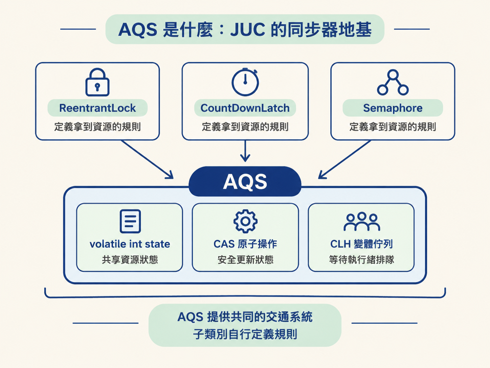
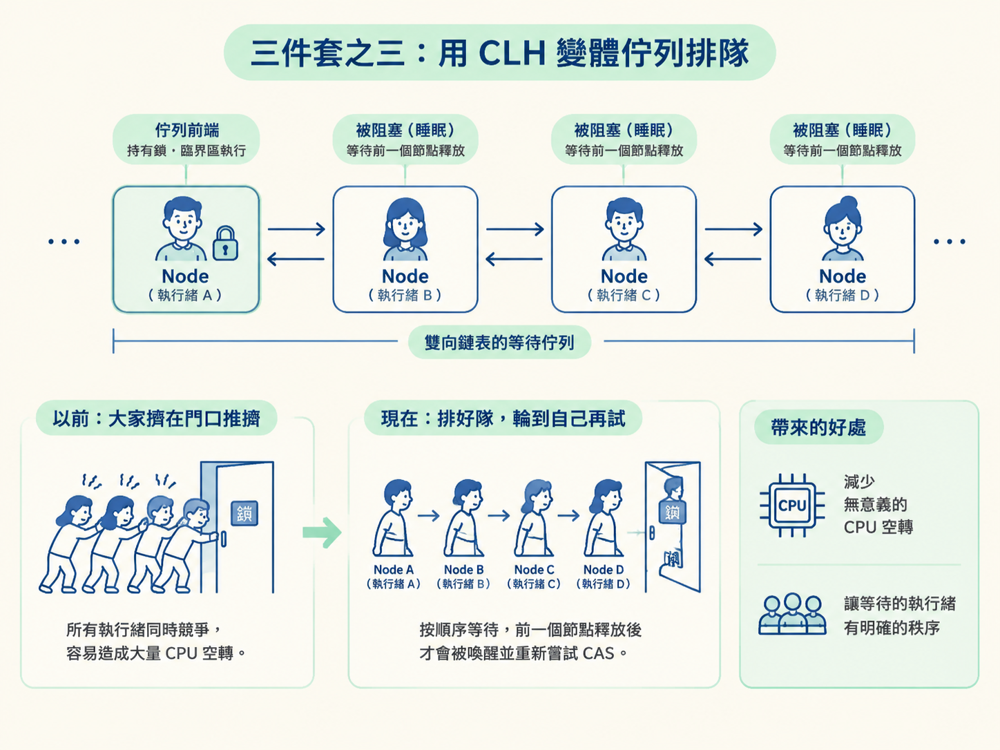
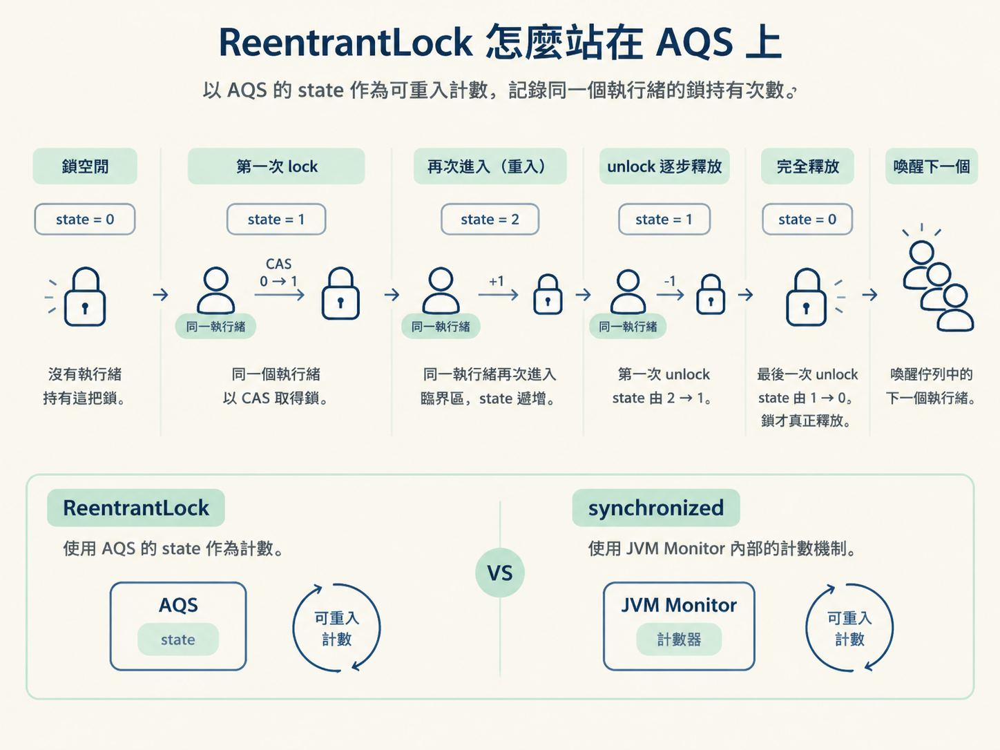

這一節要帶你看懂 AQS 的三個核心零件：volatile state、CLH 變體佇列，以及 CAS。接著，你會看到 ReentrantLock 如何利用這套骨架，提供可重入、公平鎖、可中斷等待，以及多個 Condition。
上一節可以把 synchronized 想成一台「自動擋」：加鎖、解鎖都交給 JVM 處理，就算區塊裡拋出例外，JVM 也會幫你把鎖釋放掉。這種寫法省心，也因此成為多數情境下的預設選擇。
但自動擋也代表你少了一些控制權。你不能指定鎖要不要公平排隊，不能讓正在等鎖的執行緒主動放棄，也不能只喚醒某一群等待中的執行緒。
當需求變成「搶不到鎖的執行緒應該可以被中斷」，或是「我只想喚醒消費者，不想把生產者也叫醒」時，就需要一台手動擋。這台手動擋就是 ReentrantLock；而支撐它、也支撐許多 JUC 工具的地基，叫做 AQS。
先把 AQS 的三件套看清楚，再回頭看 ReentrantLock 如何長在這套骨架上。這樣你記住的就不只是 API，而是它為什麼能提供這些能力。
AQS（AbstractQueuedSynchronizer，抽象佇列同步器）不是一把可以直接拿來使用的鎖，而是一個用來建構鎖與同步器的框架。
它主要處理兩件事：第一，管理共享資源目前的狀態；第二，管理那些暫時拿不到資源、需要排隊等待的執行緒。
這套架構可以濃縮成三件套：
volatile int state，代表共享資源的狀態。ReentrantLock、CountDownLatch、Semaphore 等工具，都是沿用這副骨架，再套上各自的規則。AQS 提供的是共同的交通系統；每個同步器則自行決定「什麼叫拿到資源」以及「資源狀態該如何變化」。

volatile int statestate 代表共享資源目前的狀態，但它沒有固定的業務含義。換一個工具，同一個數字就可能代表完全不同的事情。
| 工具 | state 的意義 |
|---|---|
| ReentrantLock | 0 表示鎖空閒，1 表示被佔用，大於 1 表示重入次數 |
| CountDownLatch | 還需要倒數的次數 |
| Semaphore | 還剩下幾張許可證 |
因此，AQS 不會替你決定「state 等於多少才算成功」。它只負責安全地讀寫這個狀態，至於狀態的意義，以及從一個數字變成另一個數字的規則，則交給具體的子類別定義。
statestate 是多個執行緒共同競爭的資源，不能只用普通賦值修改。否則，兩個執行緒可能同時看到「目前是 0」，接著都以為自己可以成功取得鎖。
AQS 使用 CAS（Compare And Swap，比較並交換）來完成原子更新。它的規則很簡單：只有當記憶體中的舊值，仍然等於執行緒預期的值時，才把它換成新值；如果中途已被其他執行緒改過，這次 CAS 就會失敗。
以搶鎖為例，可以把過程想成這樣：執行緒嘗試用 CAS 把 state 從 0 改成 1。誰成功完成這次交換，誰就取得了鎖。
在競爭不激烈時，CAS 可以直接完成搶鎖，不需要作業系統介入，因此速度很快。不過，CAS 失敗後還要有後續安排；否則所有執行緒都留在原地重試，CPU 就會被大量消耗。
那麼，CAS 失敗、暫時搶不到鎖的執行緒要去哪裡？AQS 不會讓它們一直在原地空轉，而是把每個執行緒包成一個 Node 節點，串進一條雙向鏈表中等待。
這條佇列是 CLH 鎖的變體。排在後面的節點通常會被阻塞，等前面的節點釋放資源並喚醒它，才重新嘗試 CAS。
這樣一來，系統就把「大家一起在門口推擠」改成「排好隊，輪到自己再試」。競爭激烈時，這能減少大量沒有意義的 CPU 空轉，也讓等待鎖的執行緒有比較明確的秩序。

有了 AQS 的骨架，ReentrantLock 要做的就是定義自己的狀態規則：
state 為 0，表示鎖目前空閒。state 從 0 改成 1。state 再加一，這就是重入。state 減一；直到回到 0，才代表鎖真正空閒。這就是它和 synchronized 都能支援可重入的原因：同一個執行緒進入臨界區後，還可以再次取得同一把鎖。差別在於，synchronized 使用 JVM Monitor 內部的計數機制，而 ReentrantLock 則使用 AQS 的 state。

在這個共同骨架上，ReentrantLock 又多提供了幾項 synchronized 沒有的控制能力。
true 後，可以改成先來後到的排隊方式。代價是每次取得鎖時，都要確認佇列中是否有人排在自己前面，因此效能可能下降。synchronized 沒有公平鎖選項，使用上是非公平的。lockInterruptibly() 讓正在等待鎖的執行緒可以回應中斷，主動放棄等待。這適合用來避免執行緒無止境地卡住。使用 synchronized 搶鎖時，則沒有這種等待中的中斷能力。newCondition() 可以建立多條條件佇列，將不同類型的等待者分組。這樣就能只喚醒消費者，或只喚醒生產者。synchronized 只有一個等待集合，notify() 叫醒其中一個，notifyAll() 則全部叫醒，無法做這種分組喚醒。不過，手動擋的代價就是收尾工作要自己負責。ReentrantLock 必須在 finally 中解鎖，否則臨界區一旦在解鎖前拋出例外，鎖就可能永遠卡住，其他執行緒也只能一直等下去。
ReentrantLock lock = new ReentrantLock();
lock.lock();
try {
// 臨界區：安全地操作共享資源
} finally {
lock.unlock(); // 一定要在 finally 釋放
}| 比較面向 | synchronized | ReentrantLock |
|---|---|---|
| 層級 | Java 關鍵字，JVM 層實現 | JDK 的 API 類，基於 AQS |
| 加解鎖 | 隱式，JVM 自動管理 | 顯式，要自己 lock／unlock |
| 公平性 | 只有非公平 | 可選公平或非公平 |
| 等待中斷 | 不支援 | 支援 lockInterruptibly |
| 條件喚醒 | 單一等待集合 | 可綁定多個 Condition |
| 解鎖安全 | 出例外也會自動釋放 | 忘記 unlock 就會卡死 |
| 效能 | JDK 1.6 之後，兩者在一般情境下已經相差不多 | |
如果沒有特殊需求，預設先使用 synchronized。它寫法較短，不需要自己記得解鎖，而且 JVM 還能進行優化。對絕大多數一般的互斥場景來說，這已經足夠。
只有在你明確需要公平排隊、等待可中斷、多組條件精準喚醒，或嘗試取得鎖等能力時，才考慮改用 ReentrantLock。
一旦選了 ReentrantLock，就要把解鎖放進 finally。你換取的是更多控制力，但同時也放棄了 synchronized 自動釋放鎖的保險。
AQS 是 JUC 的同步器地基，核心只有三件套：volatile int state代表共享資源狀態、CAS 負責原子搶奪、CLH 變體佇列負責讓失敗的執行緒排隊等待。state的具體意義由各個工具自行定義。ReentrantLock就建立在這套骨架上，因此能提供可重入能力，還比synchronized多了公平鎖、可中斷等待與多個Condition；代價是必須手動解鎖，忘記呼叫unlock就可能讓鎖永遠不釋放。日常情境預設使用synchronized，真的需要這些彈性時，再選擇ReentrantLock。
到這裡，AQS 解決的是「同一時間只讓一個執行緒進入臨界區」的問題。但多執行緒程式還有另一種常見錯誤：即使沒有互斥衝突，一條執行緒修改了值，另一條執行緒也可能根本看不到最新結果。
下一節要談的 JMM 與 volatile，處理的正是這個「看不到」的問題。把 AQS 的「排隊與搶資源」接上 JMM 的「可見性與記憶體規則」，你才會真正看懂 Java 多執行緒的整張地圖。